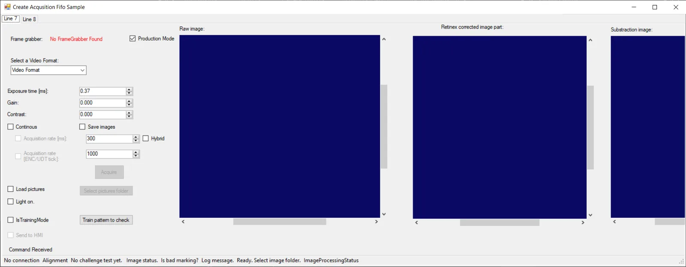
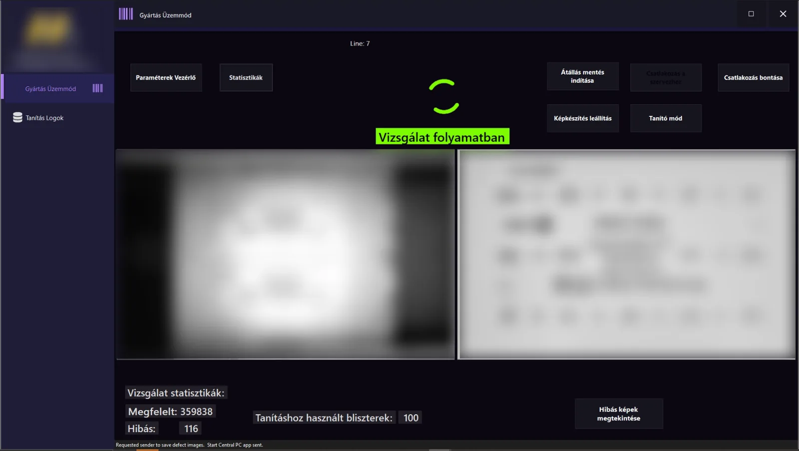
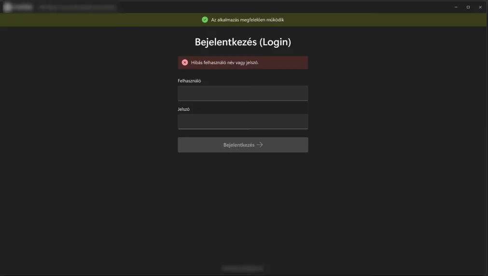
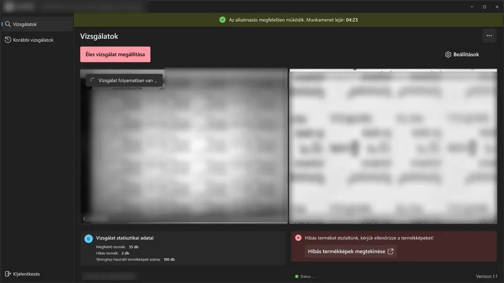

The operator HMI flags a defect on the foil. Camera feed redacted · client details removed.
Two apps that check the print on every blister foil, on two pharmaceutical lines at once, in under 100 ms per frame. I designed and built both, installed them on the factory floor and trained the operators.
The operator HMI flags a defect on the foil. Camera feed redacted · client details removed.
Context
On a pharmaceutical packaging line, the text printed on the blister foil (batch, expiry, product) must be readable on every single pack. A smudged or faded print is a compliance failure.
The plant ran two lines at the same time and needed every frame checked live, with operators who could trust the result and act on it.
I built two apps: a Sender, the high-speed engine next to the cameras, and an HMI, the operator's command centre.
Requirements
| Need | Target |
|---|---|
| Speed | Capture, process and send each frame in under 100 ms |
| Two lines | Both lines on one I/O card, without interfering |
| Set-up | The HMI finds the Sender and connects with no configuration |
| No lost data | A defect image is never lost or left orphaned |
| Compliance | Login, role-based access and an audit trail of every action |
Architecture
Hover or tap any box for a plain-English explanation.
Key decisions
Screens
Camera feeds are blurred and client details removed on purpose.




Outcome